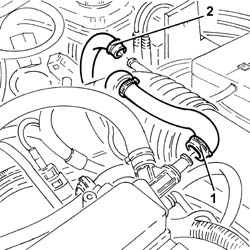
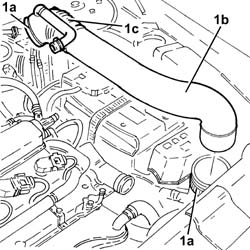
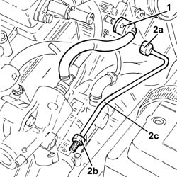
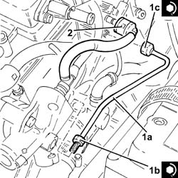

1056F76 High pressure PIPE from PRESSURE PUMP TO single FUEL MANIFOLD PIPE - R.R.A
- Path
- Procedures > 10 ENGINE > 1056 PETROL INJECTION SYSTEM > 1056F DIRECT PETROL INJECTION SYSTEM > 1056F76 High pressure PIPE from PRESSURE PUMP TO single FUEL MANIFOLD PIPE - R.R.A
- Kind
- repair procedure (removal / refitting; the operation number is the code)
- Applies to
- engines: 2.0 JTS, 2.0 JTS; all production periods
- Interactive page
- https://sloeber94.github.io/elrnDB-a156/en/#/3237742
Applies to: engines: 2.0 JTS, 2.0 JTS; all production periods
 Removing
Removing
 Refitting
RefittingPosition the vehicle on the ramp.
DRAIN THE FUEL HIGH-PRESSURE SYSTEM AS DESCRIBED BELOW.
Start up the engine.
Maintain idle for 2 minutes.
Remove the fuel pump relay.
Wait for the engine to stall.
Try to start the engine: if the engine starts within 10 seconds, wait for it to stall, then try to start it again; if the engine does not start withiin 10 seconds, continue cranking for a further 5 seconds.
Wait until the engine cools down.
Ensure that the ignition key is in the OFF position, then disconnect the negative battery terminal (-).
 | Name | Connector |
|---|---|---|
- | Battery |
Proceed with removal 1016A40 ignition coil cover on cylinder head- r+r .
Proceed with removal 7055B54 under-engine guard - r r .
1. Loosen the band and disconnect the oil vapour recirculation pipe from the cam cover.
2. Loosen the band and disconnect the vacuum pipe from the corrugated sleeve.

Applies to: engines: 2.0 JTS, 2.0 JTS; all production periods
1. Loosen the bands (1a) and remove the rigid pipe (1b) with corrugated air intake sleeve (1c) from the air filter to the throttle body.

Applies to: engines: 2.0 JTS, 2.0 JTS; all production periods
1. Disconnect the rapid attachment for the fuel bypass pipe from the fuel manifold.
2. Undo the connectors (2a), (2b) and remove the high-pressure pipe from the pressure pump to the single fuel manifold pipe (2c).

Applies to: engines: 2.0 JTS, 2.0 JTS; all production periods
Refitting
Removing1. Refit in its seating a new high-pressure pipe from the pressure pump to the single fuel manifold pipe (1a) and tighten the connectors (1b) and (1c) to the specified torque.
 | Fastening | Component | Ø | Value (daNm) |
|---|---|---|---|---|
1b | Connector | FUEL HIGH PRESSURE PIPE | M22 | (High pressure pump side) 1.6 ÷ 2.0 |
| Fastening | Component | Ø | Value (daNm) |
|---|---|---|---|---|
1c | Connector | FUEL HIGH PRESSURE PIPE | M12 | (Fuel manifold pipe side) 2.0 ÷ 2.4 |
2. Connect the rapid attachment for the fuel bypass pipe to the fuel manifold.

Applies to: engines: 2.0 JTS, 2.0 JTS; all production periods
Place the rigid air supply pipe with corrugated air intake sleeve from the filter to the throttle body back in its housing and secure it using the bands.
Connect the vacuum pipe to the corrugated hose and tighten the band.
Connect the oil vapour recirculation pipe to the tappet cover and secure with a band.
Proceed with refitting 7055B54 under-engine guard - r r .
Proceed with refitting 1016A40 ignition coil cover on cylinder head- r+r .
Connect the negative (-) battery terminal.
Remove the car from the ramps.
Topics linked from this page (3)
- 1016A40 ignition coil cover on cylinder head- r+r
- 7055B54 under-engine guard - r r
- A1B Battery ( BATTERY NEGATIVE )